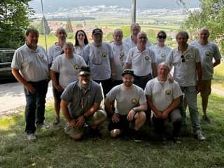

La società
La Società Tiratori San Salvatore - Paradiso gestisce lo stand di tiro di Grancia, con linee a 300m per il fucile e a 50m per la pistola. Accogliamo tiratori sportivi, militi che devono assolvere il tiro obbligatorio, giovani e chiunque voglia avvicinarsi a questo sport.
